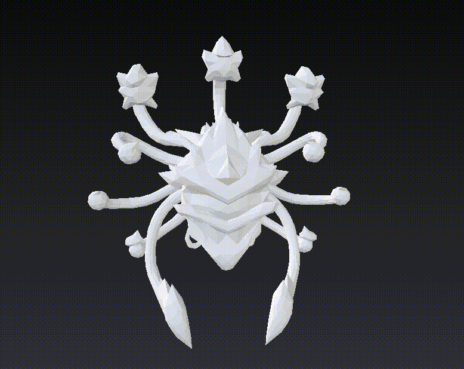

Tripo AI 背后的几何跃迁——一次把"玩具级"3D推到生产管线的算法迭代
从 v2.5 到 v3.1，Tripo 用两年时间把 AI 生成 3D 的精度从画廊级推进到了生产就绪。拆解它内部怎么让一张草图直接变成可打印、可绑骨、可进引擎的 200 万面 HD 模型。
一个问题：为什么 Tripo 的模型能直接进生产管线？
2023 年底到 2024 年初这波文生 3D 浪潮里，绝大多数工具生成的东西有一个共同特征——看起来像那么回事，但你不敢真的拿来用。面数太低，拓扑混乱，贴图糊成一团，导进 Blender 一眼就能看出是 AI 拼出来的。行业里给这类资产起了个名字：画廊级。意思是摆着看可以，一动手就露馅。
去Tripo AI官网逛一圈就能发现，它在 2025 年做了一件不太一样的事：从一开始就不打算做画廊。版本演进从 v2.5 跳到 v3.0 再到 v3.1（内部代号 H3.1），两年内把几何精度推到了生产级——200 万多边形 HD 模型、四边面智能网格、自动绑骨、Flux + GPT-4o 的多模态输入理解。这些能力叠在一起，让独立开发者、3D 打印爱好者、电商产品视觉团队可以真的把它当工具用，而不是当玩具玩。
它到底是怎么做到这一步的？把它的内部设计拆开看，会发现几个关键的取舍决定了它能从"看起来像"走到"真能用"。
拆解一：版本跃迁的几何本质
Tripo 的版本演进不是换个 UI 或者改改默认参数那么简单。v2.5 到 v3.0 是一次架构级的跃迁，v3.0 到 v3.1 则是把新能力打磨到可用、稳定、积分消耗可控。
v2.5：面向生产管线的深度优化（2025 年 1 月，官方标注 v2.5-20250123）。这一版的核心改进集中在几何细节和 PBR 保真度，加深了与 ComfyUI 和 Blender 的集成。如果你在 2025 年初第一次接触 Tripo，大概率用的是这一版或其后继小版本。这时候它已经不再满足于"能生成"，而是开始关心"能不能导出后直接用"。
v3.0：从"玩具"到"工具"的跨越（2025 年 9 月）。官方把这一版定位为从"早期探索"转向"可商用生产"的关键里程碑。引入了三个标志性能力：
- 200 万多边形 HD 模型：此前算法普遍在 10–50 万面，v3.0 首次把精度上限推到生产渲染级别。光固化打印机能打印 0.05mm 级别的细节，HD 模型的优势在这里充分体现
- Flux 与 GPT-4o 集成：文本描述可以借助 GPT-4o 理解更细腻的语义，Flux 负责渲染预生成参考图。这意味着输入不再只是"一个牛仔"这种粗粒度指令，可以是"穿着磨损牛仔夹克、左膝盖有补丁、左手持旧版左轮手枪的美国西部牛仔"
- 自动 T-pose 绑骨：生成后自动附加标准骨骼，可直接进入动画流程。这是画廊级和生产级的分水岭——能绑骨才意味着资产可以参与到游戏、动画、交互的完整管线里
v3.1（H3.1）：当前默认版本。官方给出的定位是：最高细节和几何精度，纹理改进；支持文本、图片、多视图三种输入；最高约 50 万多边形配合 PBR。与 v3.0 相比，v3.1 没有做激进的架构变更，而是把 v3.0 的新能力打磨到可用、稳定、积分消耗可控。Studio 用户一般不需要关心版本——系统会根据任务自动匹配当前最优的算法版本。
拆解二：智能网格和重拓扑——把 AI 的"脏活累活"兜住
AI 直接生成的 3D 模型有一个天生的问题：拓扑乱。破洞、重叠面、法线混乱、非流形边，这些在 AI 看来"差不多"的东西，到了切片软件、游戏引擎、DCC 工具里就全是错误。切片报"非流形边"就卡死，引擎导入全是灰色模型，Blender 里修拓扑要花的时间比重新建模还长。
Tripo 的解决思路是在 Studio 层面把这些"脏活累活"兜住，不让用户再手动修。从下载拿到 Studio 客户端就能开启这套自动化流程。具体来说有两层：
标准重拓扑清理（5 积分）：清理破洞、重叠面、法线混乱。这一层解决最常见的"打不开"问题。光固化打印场景里，这一步是必做的——AI 生成的模型不一定有平坦的底部，打印时需要一个平坦底面坐在打印台上，重拓扑会自动修正这些。
四边面网格（再加 5 积分，合计 10 积分）：让拓扑更干净。四边面是游戏引擎和 DCC 工具最友好的拓扑形式——支持后续绑骨、变形、细分。智能网格功能会自动把 AI 生成的三角形网格转换成规整的四边面网格，这一步让 Tripo 生成的模型能直接进入 Unity、Unreal、Blender 等管线，而不是只能在画廊里摆着。
积分消耗方面，一个打印用模型的典型成本是：基础生成 25 积分 + Ultra HD +15 + 重拓扑 5 + 四边面 5 = 50 积分。比游戏资产便宜——打印不需要绑骨和智能分割。具体功能对应的积分明细、Ultra HD 和中等精度怎么选不浪费，去Tripo AI文档里翻参数对照表比自己摸索快。

拆解三：为什么 GLB 是默认导出格式
Tripo Studio 最推荐的导出格式是 GLB，而不是业内更常见的 FBX 或 OBJ。这个选择背后的逻辑值得聊聊。
FBX 和 OBJ 会把模型数据和贴图分成多个文件——一个 character.fbx 加上 character_albedo.png、character_normal.png、character_roughness.png 等等。最常见的问题是：贴图文件被移动或删除了，FBX 打开后全是灰色模型。复制、分享、上传的时候容易丢。
GLB 是一个文件包含所有——模型、骨骼、权重、PBR 贴图（albedo / roughness / metallic / normal）、动画轨道、UV 全部打包在一个二进制文件里。复制到任何地方都能打开，导入任何软件或引擎都是零配置。Blender 原生支持，Unity 和 Unreal 直接拖进去，Three.js / React Three Fiber 用 GLTFLoader 一行代码搞定，WebXR / A-Frame 用 a-gltf-model 组件直接引用，Sketchfab 上传自动展示，甚至微信小程序和抖音小游戏的 3D 组件都能直接引用。
Studio 导出 GLB 时还会自动修正三角面朝向和非流形问题，进一步减少用户的后处理工作量。当然 GLB 也不是万能的——Maya 传统绑定 / 动画工作流还是用 FBX，Houdini / 影视 VFX 用 USD，纯 3D 打印用 STL / 3MF，需要手动编辑贴图时 FBX 也更方便。但除了这些少数场景，GLB 应该是默认选择。
取舍：这套设计的代价
Tripo 能走到生产管线，代价是什么？我自己的使用感受有三点。
第一，积分消耗要精打细算。HD 模型 + 重拓扑 + 四边面 + Ultra 模式，一个模型可能就要 50 积分起步。付费订阅还好，免费版用户的积分是有限的。光固化打印机值得开 Ultra HD，因为层高本身就是 0.05–0.1mm，HD 模型不浪费；但 FDM 打印机层高 0.1–0.3mm，用 HD 模型只会增加切片时间，打印出来没区别——这个取舍 Tripo 自己不会提醒你，得自己算。
第二，AI 生成的模型不一定有平坦底部。打印时需要一个平坦底面坐在打印台上。Tripo Studio 当前没有专门的"加底座"功能，处理方式要么在 Studio 里用智能分割拆出底部再用重拓扑做平坦化，要么直接在切片软件里用自动放置底部平面功能——后者更简单，但意味着 Tripo 还没完全接管打印前处理的最后一公里。
第三，免费版的商用限制。付费订阅用户在遵守平台条款的前提下可以商业用途，免费版生成的模型通常仅限个人非商业用途，且以 CC BY 4.0 授权公开。这个边界需要清楚——用免费版生成的资产做电商商品展示可能是有问题的。
判断：这套原理意味着什么
Tripo 的设计方向很明确：它不试图替代传统 DCC 管线（Blender、Maya、Houdini），而是把 AI 擅长的"快速原型 + 高保真细节生成"这一环做深做透，然后通过智能网格、自动绑骨、单文件导出把生成结果无缝接到后续管线里。
适合什么场景？独立游戏开发者没有专职 3D 美术，或者需要快速迭代概念阶段的资产——Tripo 的提示词 → 智能网格 → DCC Bridge → 引擎微调这条工作流能把概念验证压缩到原来的十分之一。3D 打印爱好者用文字或草图快速生成桌面玩具、吉祥物、微缩模型。电商产品视觉拍一张白底照拖进 Tripo，几秒内得到对应的 3D 模型，导出 GLB 嵌入商品详情页或做 AR 试穿。概念艺术家脑子里有想法但还没动手画出来，先用 Tripo 的文本模式快速生成几个方向的 3D 原型，然后用魔法画笔修纹理、智能分割拆部件，最后导出到 Blender 里继续完善——这种"AI 打草图 → 人工精修"的混合工作流是目前概念设计圈越来越流行的用法。
不适合什么场景？需要从零开始做复杂绑定和动画的影视级角色——Tripo 的自动绑骨是标准 T-pose，能进管线但离生产级绑定还有距离，还是得进 Maya 重绑。Houdini / 影视 VFX 的 USD 管线——Tripo 不导出 USD，导过去还要重转换。需要长期维护和迭代的游戏资产——Tripo 生成的模型拓扑虽然干净，但和传统建模师手雕出来的拓扑还是有差距，修改的时候会遇到限制。
整体判断下来，Tripo AI 做了一件不太讨巧但很实用的事——它没有继续堆"我能生成什么"的功能清单，而是盯着"我生成的东西你能不能真的拿来用"这个问题死磕几何精度、拓扑质量、管线集成。两年迭代到今天，这个方向的价值已经显现：对独立开发者和小团队来说，它确实把一个原来需要专职 3D 美术的环节压缩成了几分钟的事。
资料在三个地方都能翻到——GitHub 的 APK 仓库分类目录里能直接看完整文档集合，国内网络环境可以去 Gitee 的镜像版，GitCode 那边也备了一份以防单渠道临时不可用。之前遇到过一次单仓库挂掉导致断更，之后就习惯了三份并行。